Avance del proyecto final (60–70 %) · Ciencia de Datos y Big Data · Facultad de Sistemas, ETITC
Docente: Karen Paola Martínez Orjuela · Bogotá, noviembre de 2026
| Integrante | Código | Rol principal |
|---|---|---|
| Carlos Alfonso Fernández Salas | 1065910306 | Ingeniería de datos (ingesta, Spark, almacenamiento, backend del prototipo) |
| Santiago Sandoval Urrego | 1030520921 | Análisis y modelado (EDA, motor de sellos, modelos y red neuronal) |
notebooks/01_eda.ipynb (análisis exploratorio), notebooks/02_modelos.ipynb (modelos),
reports/ (métricas, logs de ejecución y figuras) y src/nutriscan/ (código del flujo).
| Componente | Estado | Evidencia |
|---|---|---|
| Datos reales obtenidos y depurados | Terminado | Volcado completo del 18 nov. 2026; 4,92 M de productos (sección 3) |
| Big data: ingesta, almacenamiento y procesamiento | Terminado | Flujo PySpark bronce → plata → oro en Parquet; logs de ejecución (sección 4) |
| Motor de sellos (Res. 2492 de 2022) | Terminado | Versión Python y Spark con 16 pruebas automáticas que dan el mismo resultado |
| Análisis exploratorio | Terminado | 9 gráficas con interpretación (sección 5) |
| Modelos frente a línea base | Primera versión | Regresión logística, red neuronal y K-means, con evaluación global, en Colombia y con ruido (sección 6) |
| Validación de sellos con 30 empaques | En curso | Muestra a fotografiar en supermercado |
| API por código de barras y tablero | Pendiente | Planeado del 22 al 28 nov. (sección 7) |
| DistilBERT, app con cámara/OCR, MongoDB | Opcional | Fuera del mínimo entregable |
| Observación de la docente | Cómo se atendió |
|---|---|
| (1) Las etiquetas NOVA se calculan con reglas sobre los ingredientes: un F1 ≥ 0,80 puede ser fácil y poco informativo. | Se comprobó: una línea base que siempre responde "ultraprocesado" ya obtiene F1 = 0,80. Se adoptó el F1 macro (promedio de ambas clases) y se reportan por separado la prueba global, el subconjunto colombiano (excluido del entrenamiento) y una prueba de robustez con ingredientes dañados. También se analizan los términos que aprende el modelo (sección 6). |
| (2) Los productos colombianos pueden ser pocos e incompletos: medirlo en la primera semana y ajustar las metas. | Se midió: 10.106 productos colombianos, pero solo el 19 % tiene ingredientes y el 16 % tiene NOVA. Las metas se ajustaron a 3.754 productos evaluables para sellos y 1.560 para el modelo (tabla 3). |
| (3) El alcance es muy amplio: fijar un mínimo entregable. | Mínimo: flujo de datos, motor de sellos, EDA, regresión logística + red neuronal (MLP) + K-means, API de consulta y tablero. Opcionales: DistilBERT, app con cámara/OCR y MongoDB. |
| Característica | Valor |
|---|---|
| Fuente | Open Food Facts, exportación CSV completa (en.openfoodfacts.org.products.csv.gz), licencia ODbL |
| Versión y fecha de descarga | Volcado publicado el 18 nov. 2026 (10:14 GMT); descargado el 18 nov. 2026 (14:40 UTC) con descarga.py |
| Tamaño | 1,54 GB comprimido · 14,02 GB descomprimido (el anteproyecto estimaba ~9 GB: la base creció) · 2,37 GB en Parquet |
| Filas y columnas | 4.921.304 productos × 211 columnas (en realidad separado por tabuladores y sin comillas) |
| Tras la depuración (capa plata) | 4.849.560 productos × 43 columnas útiles con tipos correctos |
| Problema | Productos | Tratamiento y justificación |
|---|---|---|
| Código de barras inválido | 71.691 | Descartados. Casi todos tienen más de 14 dígitos: son códigos internos de tienda, no GTIN escaneables. |
| Duplicados por código | 53 | Se conserva la versión modificada más recientemente. |
| Nutriente imposible (< 0, > 100 g/100 g o > 900 kcal) | 25.076 | Se anula toda la tabla nutricional del producto: un valor como 272 g de carbohidratos en 100 g indica que se digitó por paquete, y entonces los demás valores tampoco son confiables. |
| Parte mayor que el todo (saturada > grasa, azúcares > carbohidratos) | 6.225 | Se anula solo el valor incoherente. |
| Sin energía en kcal | 1.395.564 | Se recupera desde kJ (7.277) o con factores de Atwater (2.140); los 1.386.147 restantes quedan "no evaluables" para sellos. |
| Nulos en nutrientes e ingredientes | — | No se imputan: un sello o un NOVA inventado sería engañoso. El producto queda "no evaluable" y la completitud se reporta (figura 1). |
| Valores textuales vacíos ("en:null", "") | — | Se convierten en nulos; los ingredientes se pasan a minúscula y sin tildes para el modelo. |
| Subconjunto colombiano | Productos | % |
|---|---|---|
| Productos que se venden en Colombia | 10.106 | 100,0 |
| Con lista de ingredientes | 1.910 | 18,9 |
| Con grupo NOVA | 1.641 | 16,2 |
| Con ingredientes y NOVA (evaluación del modelo) | 1.560 | 15,4 |
| Evaluables para sellos y a los que aplica la norma | 3.754 | 37,1 |
| Meta del anteproyecto | Meta o criterio ajustado | Resultado actual |
|---|---|---|
| % de productos con sellos por categoría y fabricante | Sobre los 3.754 evaluables; solo categorías (grupos PNNS) y marcas con ≥ 20 productos | 20 categorías y 18 marcas |
| Motor de sellos con exactitud ≥ 90 % en 30 empaques | Se mantiene; la muestra se toma de los productos evaluables | En curso |
| Clasificación NOVA 4 con F1 ≥ 0,80 | F1 macro, reportado aparte en prueba global, Colombia y con ruido | 0,960 global · 0,891 Colombia |
| Prototipo con respuesta < 3 s | Se mantiene (API por código de barras) | Pendiente |
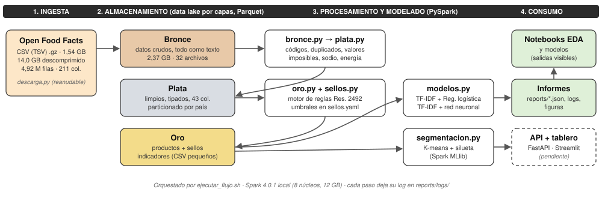
bash ejecutar_flujo.sh.Ingesta. descarga.py baja el volcado con reanudación y reintentos automáticos, y registra la versión del servidor. Durante la descarga, Open Food Facts publicó un volcado nuevo; el script lo detectó (encabezado If-Range) y empezó de cero en vez de mezclar versiones. La integridad del archivo se verificó con gzip -t.
Almacenamiento. Data lake por capas en Parquet (columnar y comprimido): bronce (crudo, 32 archivos), plata (limpio) y oro (productos con sellos e indicadores). Plata y oro se particionan por país (colombia, chile, mexico, peru, otros), así un análisis de Colombia lee solo su carpeta.
Procesamiento. Limpieza, motor de sellos, TF-IDF, regresión logística, red neuronal y K-means con PySpark y Spark MLlib; a pandas solo pasan tablas ya agregadas para graficar.
Configuración. Los umbrales de la norma están en config/sellos.yaml, así un cambio regulatorio no exige tocar el código.
reports/logs/)| Paso | Entrada → salida | Duración |
|---|---|---|
| bronce | CSV .gz de 14 GB → 4.921.304 filas en Parquet (2,37 GB) | 4 min 06 s |
| plata | 4.921.304 → 4.849.560 filas limpias | 3 min 04 s |
| oro | sellos para 4,85 M de productos + 7 tablas de indicadores | 1 min 57 s |
| modelos | TF-IDF (5.000 términos), 3 modelos × 13 conjuntos de evaluación | 18 min 04 s |
| segmentación | 503.573 productos, K-means con k = 2 a 10 | 3 min 02 s |
La lectura del archivo .gz es el cuello de botella: el formato gzip no se puede dividir y Spark lo lee con un solo núcleo. Por eso, después de esa lectura los datos se reparten en 32 bloques y los pasos siguientes usan todos los núcleos. El código tiene 35 pruebas automáticas (pytest) para cada etapa, todas aprobadas.
Todas las gráficas se generan en notebooks/01_eda.ipynb a partir de la capa oro.
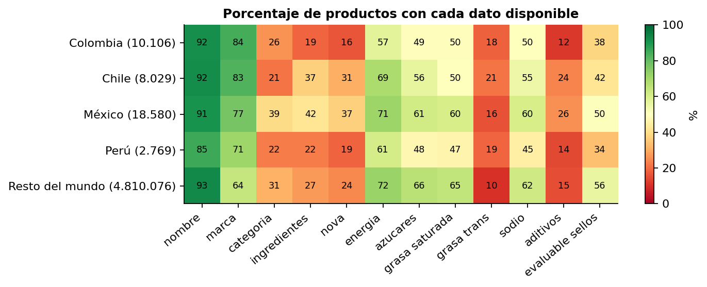
Colombia tiene 10.106 productos, pero es el país con peor cobertura de ingredientes (19 %) y de NOVA (16 %) entre los comparados, aunque sus marcas están mejor registradas (84 %). Solo el 38 % de los productos colombianos tiene los cuatro datos necesarios para evaluar sellos. La grasa trans casi nunca se reporta (18 %), por lo que ese sello está subestimado.
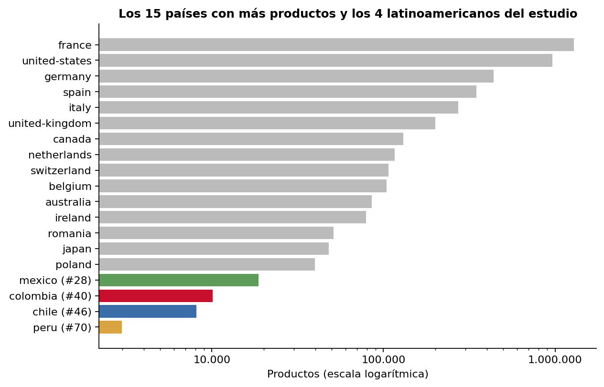
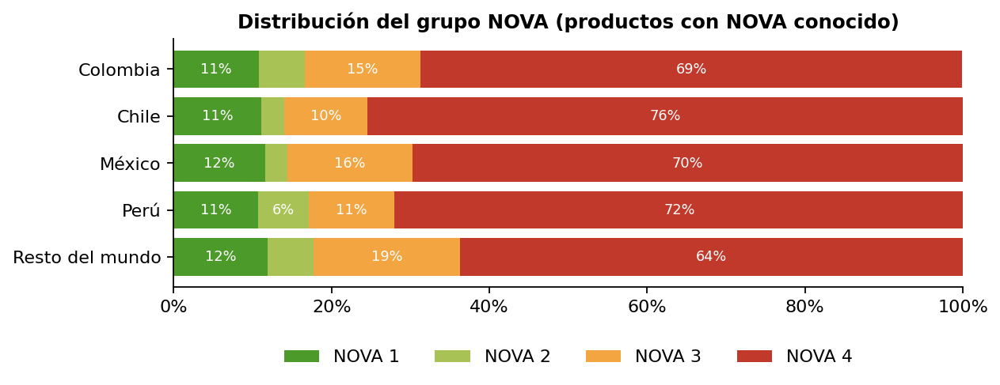
Fig. 2: la base está dominada por Europa y Estados Unidos (Francia sola aporta cerca de 1,3 millones de productos); Colombia ocupa el puesto 40, detrás de México (28.º) y delante de Chile (46.º) y Perú (70.º). Por eso el modelo se entrena con datos mundiales y Colombia se evalúa aparte. Fig. 3: en todos los grupos predominan los ultraprocesados: 69 % en Colombia, similar a México (70 %), por debajo de Chile (76 %) y Perú (72 %) y por encima del resto del mundo (64 %). Precaución: el NOVA solo se conoce para 1.641 productos colombianos, y lo que registra la comunidad no es una muestra aleatoria del mercado.
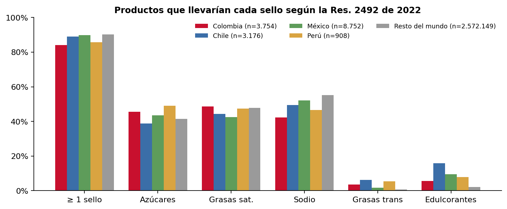
Según la estimación, el 84 % de los productos colombianos evaluables llevaría al menos un sello; los más frecuentes serían grasas saturadas (49 %), azúcares (46 %) y sodio (42 %). Los países son parecidos porque se aplica la misma regla a todos; Chile destaca en edulcorantes (16 %), lo que podría reflejar la reformulación de productos tras su ley de etiquetado (por verificar). Estas cifras probablemente sobreestiman la realidad, porque la norma aplica solo a productos con azúcares, sodio o grasas añadidos, y eso no se puede verificar sin la lista de ingredientes. Como ajuste, el sello de azúcares ya excluye los productos cuyos ingredientes no contienen azúcar añadido (por ejemplo, la leche, cuyo azúcar es la lactosa). La validación con empaques reales medirá el sesgo restante.
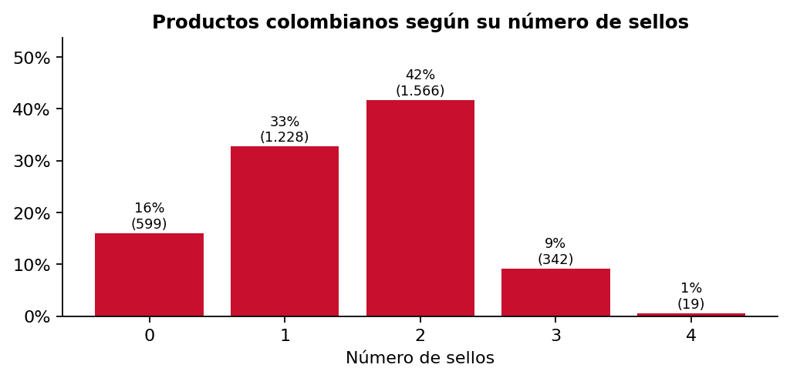
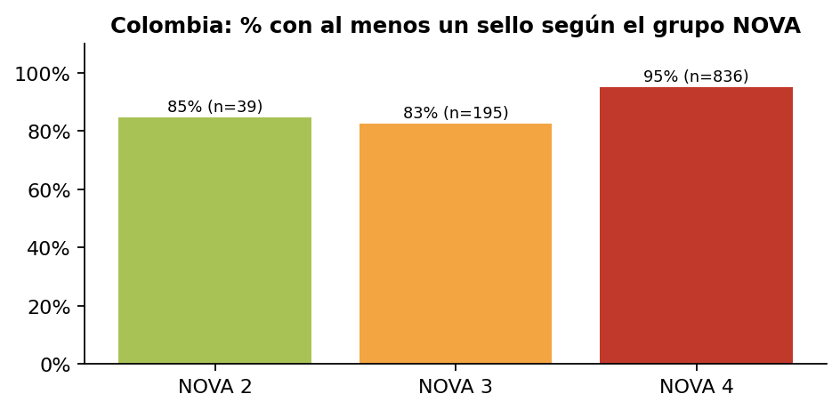
Fig. 5: la mayoría tendría 1 sello (33 %) o 2 sellos (42 %); el 16 % no tendría ninguno y solo 19 productos llegarían a 4. Fig. 6: procesamiento y sellos están relacionados: el 95 % de los ultraprocesados evaluables tendría al menos un sello, frente al 83 % de los NOVA 3. Los NOVA 1 no aparecen porque la norma no aplica a alimentos sin procesar.
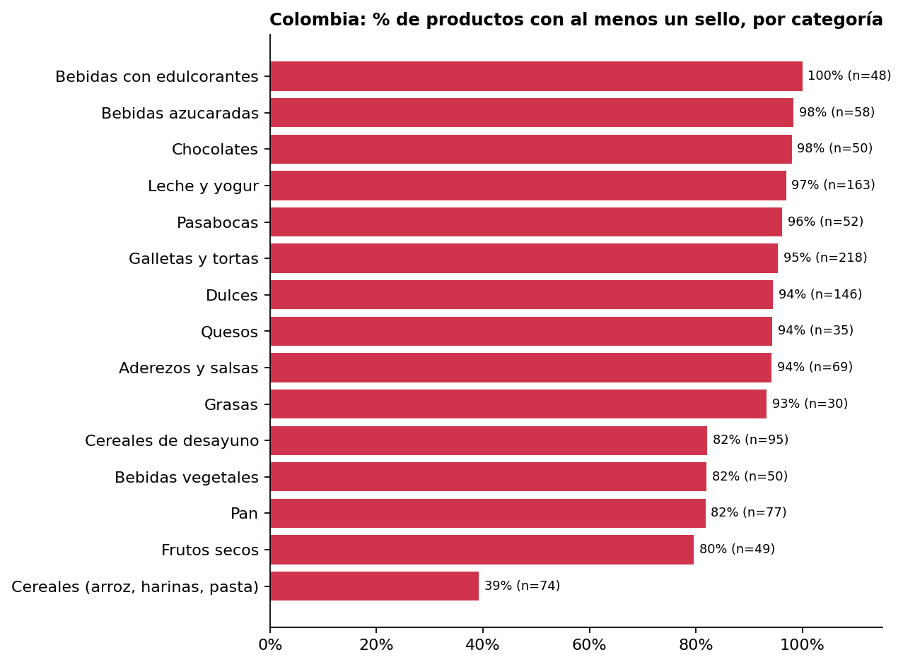
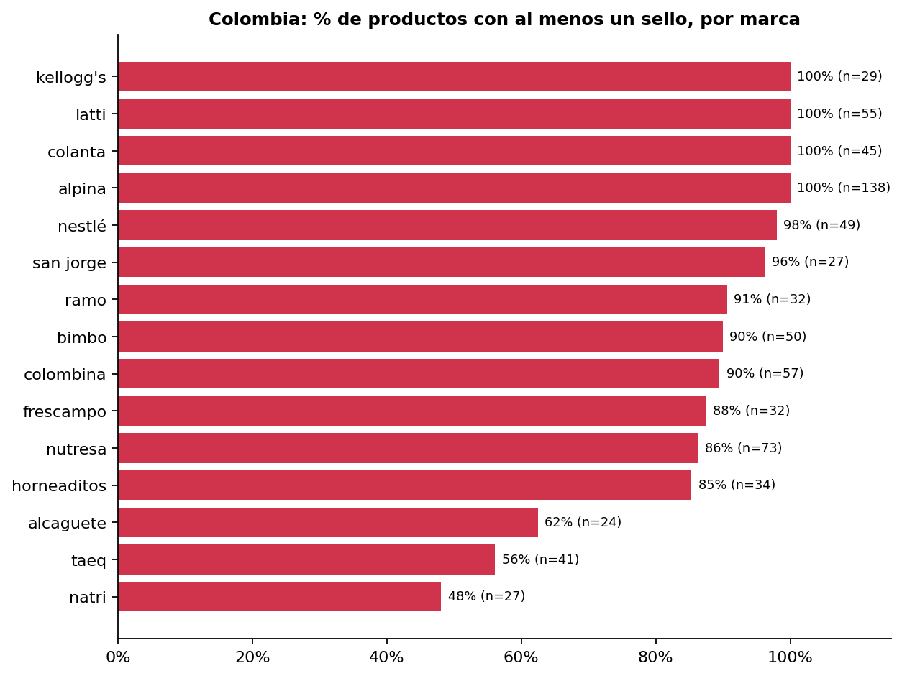
Las bebidas endulzadas, los chocolates, la leche y el yogur y las galletas superan el 95 %, mientras que los cereales básicos (arroz, harinas, pastas) se quedan en 39 %: el motor distingue productos básicos de procesados. La leche y el yogur aparecen altos sobre todo por grasas saturadas (78 %). Por marca, las grandes lácteas (Alpina, Colanta, Latti) llegan al 100 % y las marcas de línea saludable (Taeq, Natri) quedan por debajo del 60 %. Advertencia: son estimaciones con pocos productos por marca (20 a 138) y datos colaborativos; no son una evaluación oficial de cumplimiento.
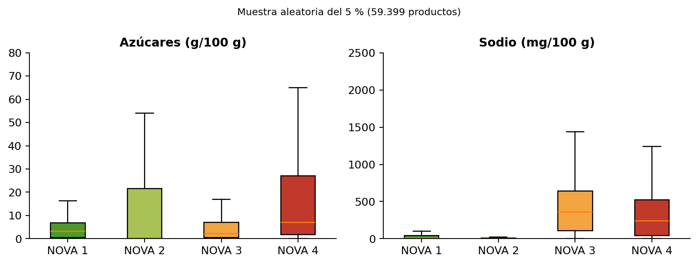
Los NOVA 4 tienen la mediana de azúcares más alta (≈ 7 g/100 g), y los NOVA 3 (quesos, panes, conservas) concentran el sodio más alto (≈ 360 mg/100 g). Procesamiento y exceso de nutrientes están relacionados pero no son lo mismo; por eso el proyecto estima ambos por separado.
Datos. 1.127.826 productos del mundo con ingredientes y NOVA, divididos 70/15/15: del 70 % de entrenamiento (789.935) se usa una muestra aleatoria de 400.980 por memoria; validación 168.956; prueba 168.935. Los 1.560 productos colombianos se excluyeron del entrenamiento y se evalúan aparte. Variables. Texto de ingredientes → palabras y pares de palabras → TF-IDF con los 5.000 términos más frecuentes (en al menos 20 productos). Modelos. (0) Línea base: siempre la clase mayoritaria. (1) Regresión logística (Spark MLlib). (2) Red neuronal: perceptrón multicapa de Spark MLlib, 1.000 → 64 → 2. La red usa las 1.000 variables más informativas (prueba ANOVA) y 199.529 productos de entrenamiento, porque con las 5.000 variables necesitaba unos 16 GB de memoria y el proceso falló.
| Conjunto | Modelo | n | Precisión | Recall | F1 (NOVA 4) | F1 macro |
|---|---|---|---|---|---|---|
| Prueba global | Línea base | 168.935 | 0,669 | 1,000 | 0,802 | 0,401 |
| Regresión logística | 0,981 | 0,966 | 0,973 | 0,960 | ||
| Red neuronal (MLP) | 0,968 | 0,945 | 0,956 | 0,935 | ||
| Colombia | Línea base | 1.560 | 0,722 | 1,000 | 0,838 | 0,419 |
| Regresión logística | 0,943 | 0,933 | 0,938 | 0,891 | ||
| Red neuronal (MLP) | 0,898 | 0,930 | 0,914 | 0,837 |
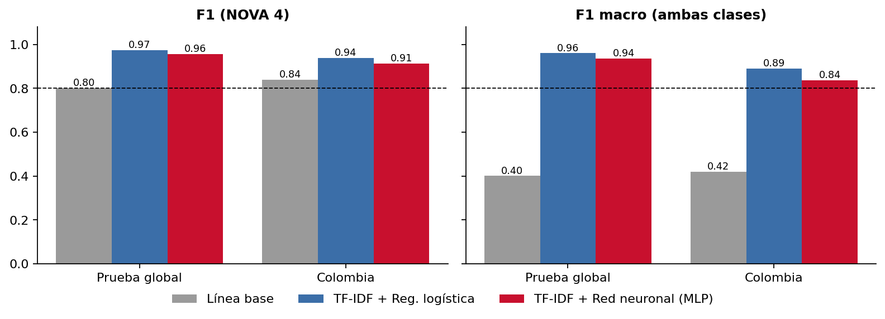
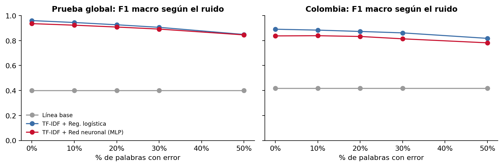
Línea base: responder siempre "ultraprocesado" da F1 = 0,80, porque el 67 % de los productos son NOVA 4. Esto confirma la observación de la docente y justifica usar el F1 macro, donde la línea base obtiene 0,40. La regresión logística es el mejor modelo: F1 macro de 0,960 global y de 0,891 en Colombia, sobre productos que nunca vio. Generaliza al mercado colombiano, aunque pierde unos 7 puntos, con más falsos positivos (4,0 % frente a 1,3 % en la prueba global). La red neuronal no la supera con las restricciones de memoria actuales.
| F1 macro según el ruido | Limpio | 10 % | 20 % | 30 % | 50 % | Lista cortada a la mitad |
|---|---|---|---|---|---|---|
| Reg. logística · global | 0,960 | 0,945 | 0,926 | 0,906 | 0,849 | 0,764 |
| Reg. logística · Colombia | 0,891 | 0,884 | 0,873 | 0,862 | 0,818 | 0,782 |
| Red neuronal · global | 0,935 | 0,923 | 0,908 | 0,892 | 0,845 | 0,757 |
| Red neuronal · Colombia | 0,837 | 0,839 | 0,833 | 0,814 | 0,782 | 0,778 |
Prueba de robustez (el aporte real del modelo). Con errores de letras, como los que deja un OCR, ambos modelos se degradan de forma gradual: aun con la mitad de las palabras dañadas, la regresión mantiene 0,818 en Colombia. En cambio, cortar la lista a la mitad es mucho más dañino: la precisión sigue en 0,99, pero el recall cae de 0,97 a 0,66, porque los aditivos y aromas que delatan el ultraprocesamiento suelen ir al final de la lista. Para el prototipo, esto significa que la foto debe capturar la lista completa.
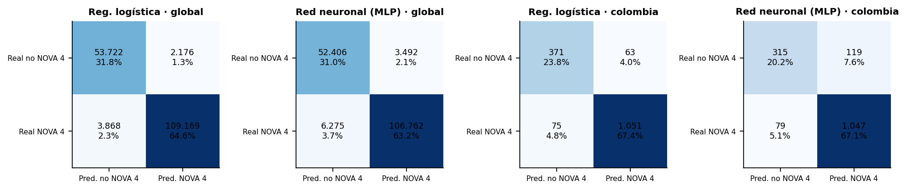
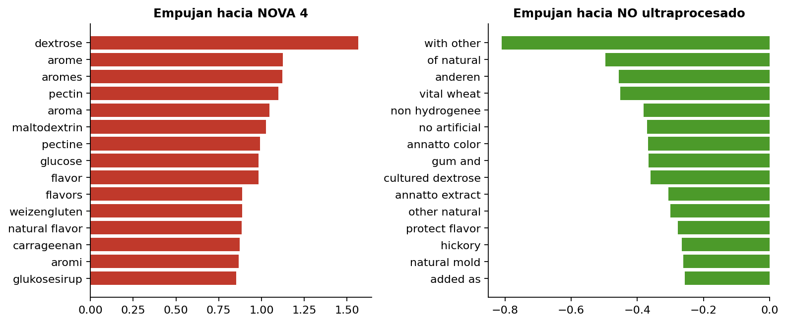
Los términos que más empujan hacia NOVA 4 son justamente los marcadores que usa la clasificación NOVA: dextrosa, aromas (arome, aroma, flavor), maltodextrina, pectina, glucosa y carragenina. Es decir, el modelo aprende en buena parte las reglas de NOVA, como advirtió la docente. Su valor está en tolerar texto con errores, no en reemplazar las reglas cuando el texto está limpio. Para la entrega final se medirá cuánto depende de esos términos (modelo sin marcadores) y se comparará con las reglas exactas sobre el mismo texto con ruido.
Siete variables por 100 g (energía, grasa, grasa saturada, carbohidratos, azúcares, proteína, sodio), transformadas con log(1 + x) y estandarizadas. Se usaron 503.573 productos: todos los colombianos con perfil completo y una muestra aleatoria del resto. La silueta es máxima con k = 2 (0,449), pero esa partición solo separa productos livianos de densos; entre k ≥ 3, el mejor es k = 9 (silueta 0,426).
| Grupo (nombre asignado) | kcal | Grasa | Azúcar | Proteína | Sodio mg | % NOVA 4 | % de Colombia |
|---|---|---|---|---|---|---|---|
| Panes, harinas y pastas | 283 | 7,6 | 2,7 | 9,0 | 440 | 69,2 | 24,1 |
| Galletas, chocolates y snacks dulces | 459 | 22,0 | 27,5 | 6,3 | 140 | 85,5 | 22,5 |
| Lácteos líquidos, salsas y preparados | 67 | 1,4 | 3,6 | 2,4 | 191 | 58,8 | 17,8 |
| Quesos y embutidos grasos | 325 | 26,0 | 0,5 | 18,1 | 669 | 54,6 | 9,1 |
| Bebidas y frutas con azúcar | 55 | 0,1 | 5,7 | 0,5 | 0 | 42,6 | 6,9 |
| Carnes, pescados y proteicos | 139 | 5,0 | 0,4 | 20,0 | 400 | 57,0 | 6,3 |
| Dulces y azucarados sin grasa | 322 | 0,1 | 55,0 | 0,6 | 20 | 71,5 | 5,9 |
| Bebidas sin calorías y aguas | 1 | 0,0 | 0,0 | 0,0 | 0 | 59,5 | 4,2 |
| Aceites y grasas | 689 | 71,0 | 0,0 | 0,3 | 0 | 28,3 | 3,1 |
Valores: medianas por 100 g. Los grupos con más ultraprocesados son "galletas, chocolates y snacks dulces" (85,5 %) y "dulces y azucarados sin grasa" (71,5 %). Los 3.901 productos colombianos con perfil completo se concentran en panes, snacks dulces y lácteos (64 % entre los tres). En el % NOVA 4 de cada grupo, los productos sin NOVA conocido cuentan como "no NOVA 4".
| Riesgo encontrado | Mitigación aplicada o prevista |
|---|---|
| Cobertura colombiana muy baja (19 % con ingredientes) | Entrenamiento con datos mundiales y evaluación aparte en Colombia; metas ajustadas al volumen real. |
| Sobreestimación de sellos (la norma solo aplica a nutrientes añadidos) | Ajuste del sello de azúcares con los ingredientes; validación con empaques; se declara como limitación. |
| La meta F1 ≥ 0,80 no era informativa | F1 macro, línea base y prueba de robustez reportados por separado. |
| Falta de memoria al entrenar la red neuronal (~16 GB) | Selección de 1.000 variables por ANOVA y muestra de 200 mil productos; Spark con 12 GB. |
| Volumen mayor al previsto (14 GB) y base que cambia a diario | Lectura única a Parquet; descarga con verificación de versión e integridad; versión registrada. |
| Errores de digitación en tablas nutricionales (25 mil productos) | Anulación de la tabla completa y reglas de coherencia, sin imputar valores. |
| El modelo aprende los marcadores de NOVA | Análisis de términos y experimento sin marcadores para la entrega final. |
| Fechas | Actividades | Entregable | Resp. |
|---|---|---|---|
| 10–14 nov. | Anteproyecto, entorno, descarga y perfil de calidad | Hecho | CF / SS |
| 15–21 nov. | Flujo PySpark bronce/plata/oro (CF); EDA, motor de sellos y primeros modelos (SS) | Hecho (este avance) | CF / SS |
| 22–25 nov. | Fotos y validación de sellos; modelo sin marcadores y comparación con reglas NOVA (SS). API FastAPI por código de barras (CF) | Informe de validación; API funcional | SS / CF |
| 26–28 nov. | Tablero Streamlit e integración con la API (CF); ajustes finales de modelos y limitaciones (SS) | Tablero y modelos finales | CF / SS |
| 29 nov.–1 dic. | Pruebas integradas, informe final, conclusiones y sustentación | Informe final y presentación | CF / SS |
| Opcional | DistilBERT multilingüe (Colab), app con cámara/OCR, MongoDB | Si el tiempo lo permite | CF / SS |
| Integrante | Aporte en este avance |
|---|---|
| Carlos Alfonso Fernández Salas | Repositorio y entorno; descarga del volcado; capas bronce, plata y oro en PySpark; orquestación (ejecutar_flujo.sh) y pruebas automáticas; diagrama del flujo. |
| Santiago Sandoval Urrego | Análisis exploratorio e interpretación; motor de sellos según la Resolución 2492; entrenamiento y evaluación de los modelos (línea base, regresión logística, red neuronal, prueba de ruido) y K-means. |
Congreso de la República de Colombia. (2021). Ley 2120 de 2021. Diario Oficial.
Ministerio de Salud y Protección Social. (2022). Resolución 2492 de 2022. https://normograma.invima.gov.co/normograma/docs/pdf/resolucion_minsaludps_2492_2022.pdf
Monteiro, C. A., Cannon, G., Levy, R. B., Moubarac, J.-C., Louzada, M. L. C., Rauber, F., Khandpur, N., Cediel, G., Neri, D., Martinez-Steele, E., Baraldi, L. G. y Jaime, P. C. (2019). Ultra-processed foods: What they are and how to identify them. Public Health Nutrition, 22(5), 936–941. https://doi.org/10.1017/S1368980018003762
Open Food Facts. (2026). Open Food Facts data exports [Volcado del 18 de noviembre de 2026]. https://world.openfoodfacts.org/data
Open Food Facts. (s. f.). NOVA groups for food processing. https://world.openfoodfacts.org/nova
Organización Panamericana de la Salud. (2016). Modelo de perfil de nutrientes de la Organización Panamericana de la Salud. OPS.
Wirth, R. y Hipp, J. (2000). CRISP-DM: Towards a standard process model for data mining. En Proceedings of the 4th International Conference on the Practical Applications of Knowledge Discovery and Data Mining (pp. 29–39).
Zaharia, M. et al. (2016). Apache Spark: A unified engine for big data processing. Communications of the ACM, 59(11), 56–65. https://doi.org/10.1145/2934664